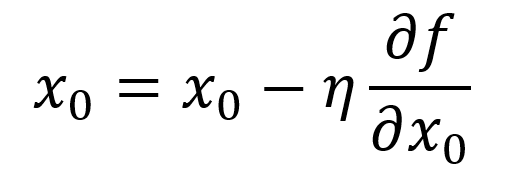

勾配法では，現在の場所から勾配方向に一定の距離だけ進みます。そして，移動した先でも同様に勾配を求め，また，その勾配方向へ進むというように，繰り返し勾配方向へ移動します。このように，勾配方向へ進むことを繰り返すことで，関数の値を徐々に減らすのが勾配法です。勾配法は機械学習の最適化問題でよく扱われる手法です。目的が最小値を探すことか，それとも最大値を探すことかによって呼び名が変わります。最小値を探す場合を勾配降下法，最大値を探す場合を勾配上昇法といいます。一般的に，ニューラルネットワーク(ディープラーニング)の分野では，勾配法は「勾配降下法」として登場することが多くあります。勾配法を数式で表すと以下のようになります。
「η」は更新の量を表します。これは，ニューラルネットワークの学習においては，「学習率」と呼ばれます。1回の学習でどれだけ学習すべきか，どれだけパラメータを更新するか，ということを決めるのが学習率です。学習率の値は，0.01や0.001など，前もって何らかの値に決める必要があります。この値は，一般的に，大きすぎても小さすぎても，「良い場所」にたどり着くことができません。ニューラルネットワークの学習においては，学習率の値を変更しながら，正しく学習できているかどうか，確認作業を行うのが一般的です。